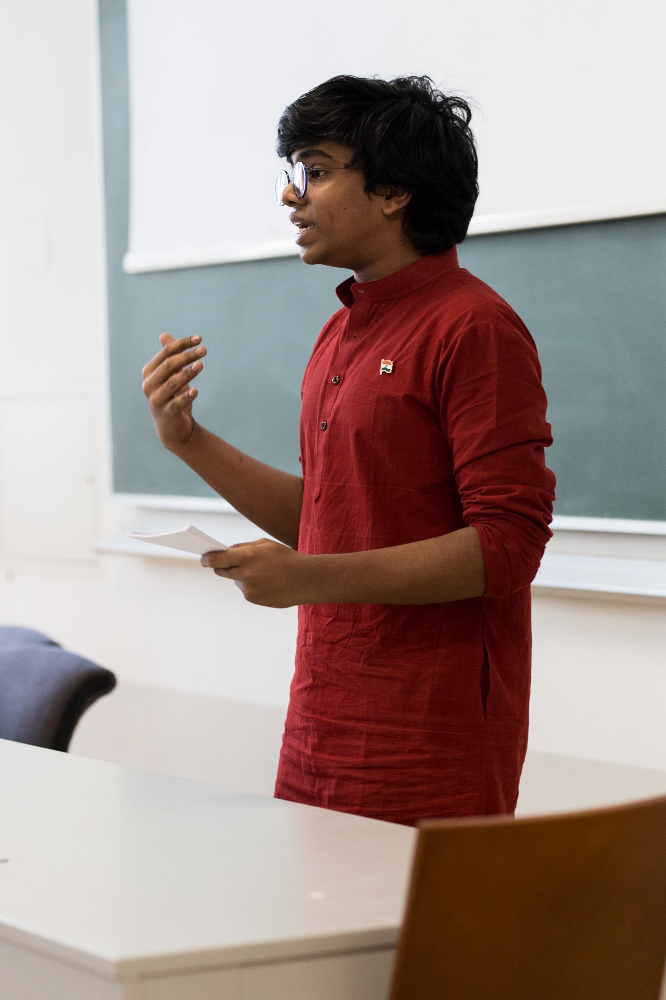

 Hello! I am Hemanth Bharatha Chakravarthy, a first-year undergraduate student at Harvard University. I aspire to a career in research and academia. I plan to pursue a Concentration in Applied Mathematics and Economics with a Secondary in Computer Science. I am deeply interested in economics, data science, public policy, computer science, and feminist theory. I am also a parliamentary debater (I debated for Team India in school, and now do so for the Harvard College Debating Union). Furthermore, I spent a lot of time in school working around issues involving equity, sexual harassment, and diversity and inclusion, and I care deeply about these issues. I grew up in Chennai, India, and I love my hometown and all its beautiful places, food, and people.
You can find my LinkedIn and my Git above.